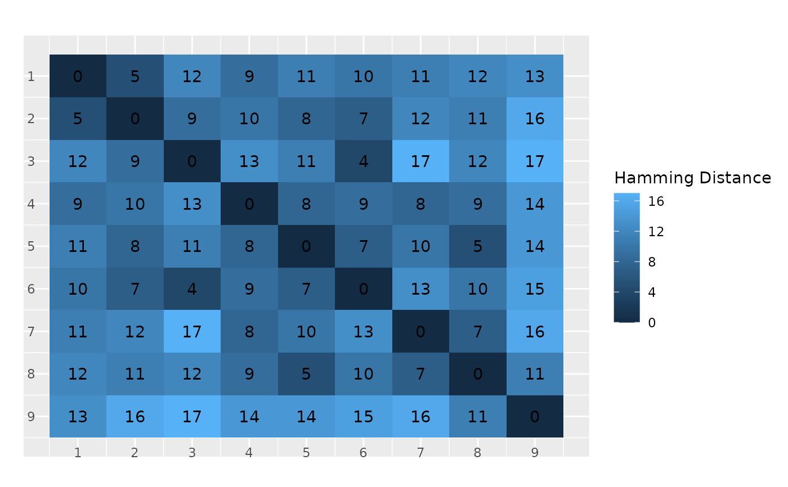

Creates all the heatmaps for a CVN, a heatmap for each pair of \((\lambda_1, \lambda_2)\)
Usage
plot_hamming_distances_cvn(
cvn,
absolute = TRUE,
same_range = TRUE,
titles = rep("", cvn$n_lambda_values),
legend_label = "Hamming Distance",
add_counts_to_cells = TRUE,
add_ticks_labels = TRUE,
t = -6,
r = -8,
verbose = TRUE
)Arguments
- cvn
A
cvnobject- absolute
If
FALSE, rescaled to[0,1]- same_range
If
TRUE, all heatmaps have the same range of values of the Hamming distance shown (Default: TRUE)- titles
Title of the plots (Default is none)
- legend_label
Title of the legend (Default: "Hamming Distance")
- add_counts_to_cells
If
TRUE, counts from the matrix are added to the plot (Default:TRUE)- add_ticks_labels
If
TRUE, the number corresponding to the graph is add to the plot (Default:TRUE)- t
Distance between tick labels and x-axis (Default: -6)
- r
Distance between tick labels and y-axis (Default: -8)
- verbose
If
TRUE, shows progress bar (Default:TRUE)
Examples
path <- system.file("cvnfit.RData", package = "CVN")
load(path)
plot_hamming_distances_cvn(fit)
#> Determining Hamming distances between the graphs...
#>
#> $m
#> [1] 9
#>
#> $p
#> [1] 10
#>
#> $W
#> [,1] [,2] [,3] [,4] [,5] [,6] [,7] [,8] [,9]
#> [1,] 0 1 0 1 0 0 0 0 0
#> [2,] 1 0 1 0 1 0 0 0 0
#> [3,] 0 1 0 0 0 1 0 0 0
#> [4,] 1 0 0 0 1 0 1 0 0
#> [5,] 0 1 0 1 0 1 0 1 0
#> [6,] 0 0 1 0 1 0 0 0 1
#> [7,] 0 0 0 1 0 0 0 1 0
#> [8,] 0 0 0 0 1 0 1 0 1
#> [9,] 0 0 0 0 0 1 0 1 0
#>
#> $distances
#> $distances[[1]]
#> [,1] [,2] [,3] [,4] [,5] [,6] [,7] [,8] [,9]
#> [1,] 0 11 16 15 14 14 17 16 13
#> [2,] 11 0 7 10 5 9 12 11 12
#> [3,] 16 7 0 13 10 8 17 12 11
#> [4,] 15 10 13 0 7 9 4 7 10
#> [5,] 14 5 10 7 0 8 11 8 11
#> [6,] 14 9 8 9 8 0 13 10 9
#> [7,] 17 12 17 4 11 13 0 9 12
#> [8,] 16 11 12 7 8 10 9 0 5
#> [9,] 13 12 11 10 11 9 12 5 0
#> attr(,"class")
#> [1] "cvn:distancematrix"
#>
#>
#> $results
#> id lambda1 lambda2 gamma1 gamma2 converged value
#> 6 6 2 1.5 0.004938272 0.0009259259 TRUE 0.009319307
#> n_iterations aic bic ebic edges_median edges_iqr
#> 6 26 4404.656 4651.844 5407.092 8 1
#>
#> $plots
#> $plots[[1]]

#>
#>